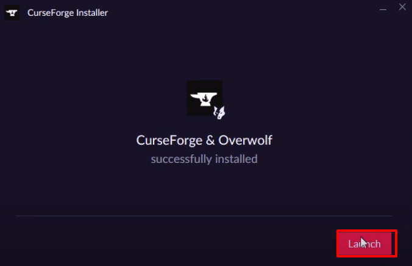
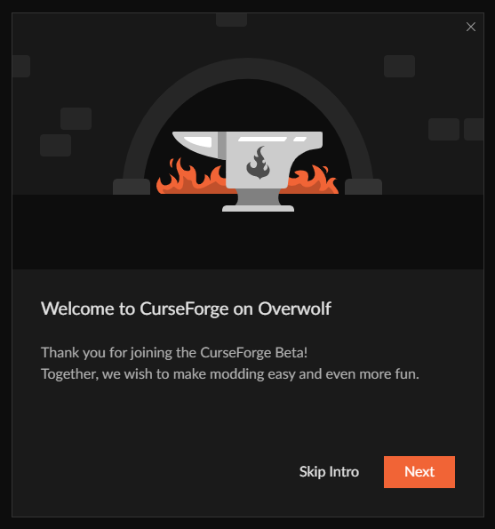
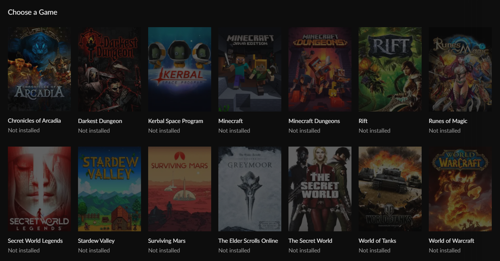
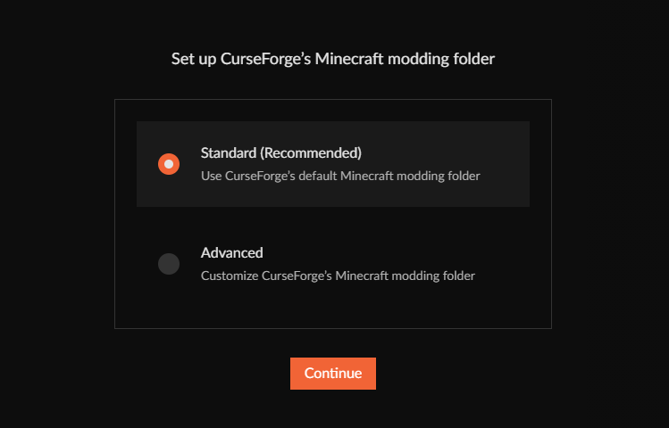
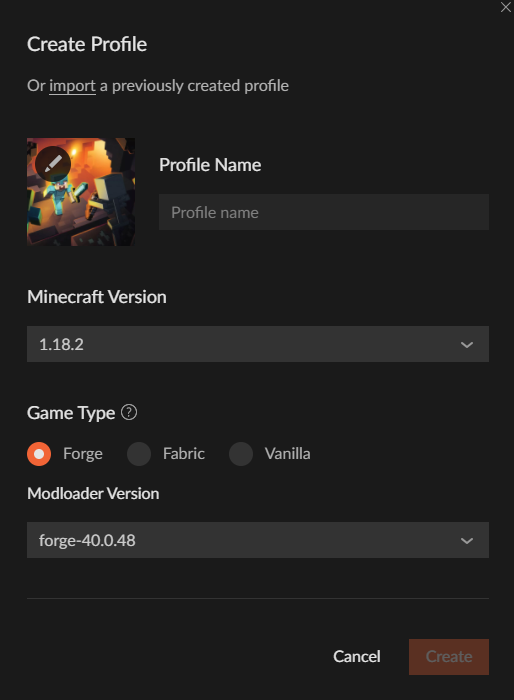
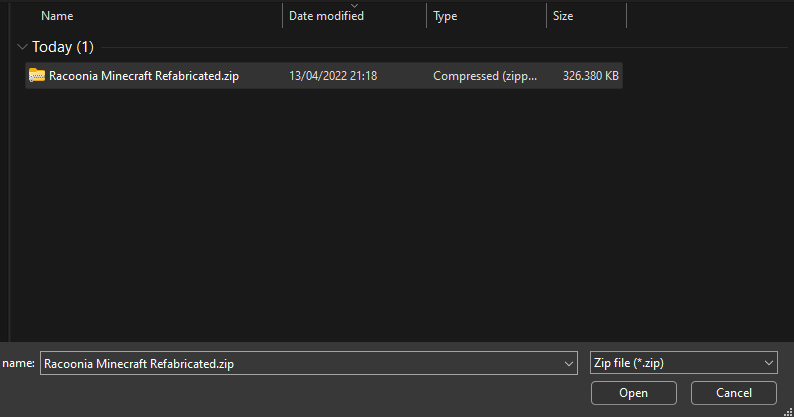
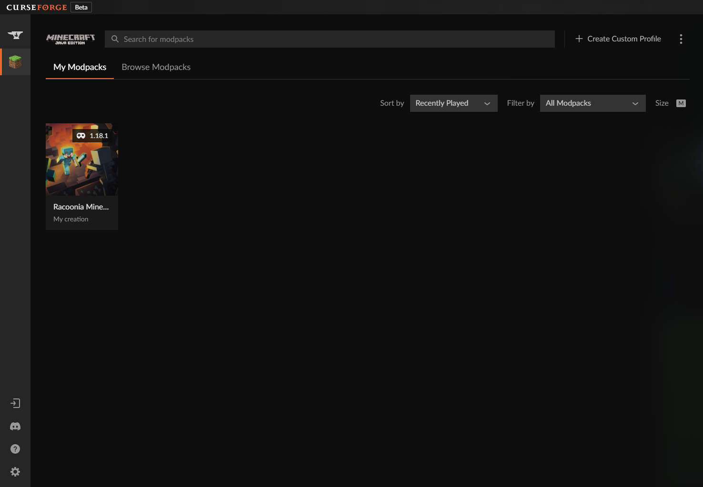
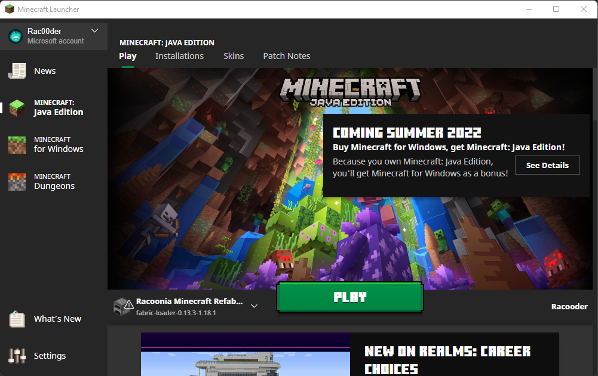

Installation
Modpack Herunterladen
Lade dir die neuste Version des Modpacks hier herunter.
Launcher Installieren
Der CurseForge Launcher hilft einfach Modpacks zu Installieren, zu spielen oder sogar selber zu erstellen.
Lade ihn hierfür unter https://download.curseforge.com herunter
Öffne nun zur Installation das heruntergeladene Programm. Solltest du gefragt werden ob das Programm Änderungen an deinem Computer vornehmen darf, stimme zu.
Folge nun den Anweisungen des Installationsprogrammes.
Wird dir dies angezeigt ist der CurseForge auf deinem Computer installiert. Klicke nun auf "Starten" um mit der Einrichtung fortzufahren.
Begrüßt dich der Launcher kannst du das Intro getrost überspringen oder es dir durchlesen.
Nun wirst du aufgefordert ein Spiel auszusuchen. Wähle hier Minecraft aus.
Jetzt musst du nur noch einen Modding Ordner auswählen und schon kann es mit dem Importiern des Modpacks losgehen.
Modpacks Importieren
Nachdem du den CurseForge Launcher erfolgreich installiert hast kannst du mit dem Importieren des Modpacks loslegen.
Erstelle nun ein benutzerdefiniertes Profil mit dem Button oben rechts in der Ecke.

Clicke im geöffneten Menü nun oben links auf "importieren".
Wähle die am Anfang heruntergeladene Archiv Datei aus und klicke auf öffnen.
Sobald der Import abgeschlossen ist kannst du das Modpack öffnen und auf "Spielen" klicken.
Nach dem du dich nun eventuell noch mit deinem Minecraft Konto anmelden musst, ist das Modpack spielbereit.
